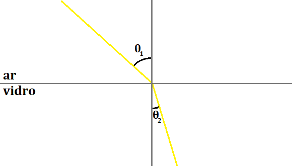

Estudar a Absorção, Reflexão, Refração e Reflexão Total da Luz.
Método
Reflexão da Luz
Começamos por apontar o laser para vários alvos diferentes, como madeira,
papel, acrílico, vidro, etc., e registamos para qual dos materiais é que a
luz refletida irá ter maior intensidade.
De seguida, fazemos incidir o laser nesse material, com diferentes ângulos
de incidência.
Registamos os ângulos de incidência e os ângulos de reflexão, observando
que irão ser iguais.
Refração da luz
Fazemos incidir o lazer em meios transparentes diferentes, como uma placa de
acrílico e um copo vidro − primeiro sem água e depois com água −
e registamos para qual dos meior o feixe refratado tem maior intensidade.
Depois, colocamos uma placa de acrílico com forma de semicírculo em cima
de um transferidor de 360º, fazemos incidir a luz do laser no centro
da placa de acrílico e observamos que há refração da luz.
Variamos o ângulo de incidência do laser sobre a placa de acrílico e
registamos os vários ângulos de incidência e de reflexão.
Finalmente, usamos uma reta de melhor ajuste e a
Lei de Snell-Descartes
para calcular o
índice de refração
da placa de acrílico:
A Lei de Snell-Descartes relaciona os índices de refração de dois meios
não opacos com o ângulo com que incide a luz e com o ângulo com que
será refratada:
⇔n1 × sin(θ1) = n2 × sin(θ2)
n1
→
Indíce de Refração do meio onde a luz se está a propagar
θ1
→
Ângulo de incidência da luz na superfície que separa os meios
n2
→
Indíce de Refração do meio onde a luz se passa a propagar
θ2
→
Ângulo de incidência da luz na superfície que separa os meios
Por exemplo, no caso de um raio solar que incida sobre uma superfície
plana de vidro:

⇔nar × sin(θ1) = nvidro × sin(θ2)
Como o indíce de refração do vidro é superior ao do ar, o ângulo de
refração é menor que o ângulo de incidência:
⇔nvidro > nar ⇒ sin(θ2) < sin(θ1) ⇒ θ2 < θ1
O índice de refração, n, de um material está
relacionado com a velocidade da luz nesse material e é definido pela
seguinte razão:
⇔n =
cv
n
→
Indíce de Refração num material
c
→
Velocidade de propagação da luz no vácuo
v
→
Velocidade de propagação da luz no material escolhido
Logo, se a luz viajar mais lentamente num determinado material, este terá
um maior índice de refração. Podemos também dizer que o material
é muito refringente.
Da mesma forma, se a luz viajar mais rapidamente num determinado
material, este terá um menor índice de refração. Podemos também dizer
que o material é pouco refringente.
Através do quociente que o define, podemos perceber que é uma grandeza
adimenional e terá um valor sempre superior a 1, pois a velocidade
de propagação da luz no vácuo será sempre superior ou igual à velocidade
de propagação da luz num qualquer material: